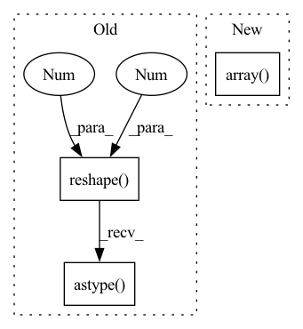

Pattern ID :6845

Before Change
analysis_opencell.reset_umap()
opencell_datamgr_vanilla.const_dataset(label_format="index")
opencell_datamgr_vanilla.const_dataloader()
group_annotation = np.tile(np.arange(3).reshape(-1, 1), (1, 2)).astype(object)
group_annotation[:2, 1] = "gp0"
group_annotation[2:, 1] = "gp1"
with assert_not_raises():
output = analysis_opencell.plot_umap_of_embedding_vector(
After Change
analysis_opencell.reset_umap()
opencell_datamgr_vanilla.const_dataset(label_format="index")
opencell_datamgr_vanilla.const_dataloader()
group_annotation = np.array([[0, "gp0"], [1, "gp1"]], dtype=object)
with assert_not_raises():
output = analysis_opencell.plot_umap_of_embedding_vector(
data_loader=opencell_datamgr_vanilla.test_loader,
savepath=_file_name,
In pattern: SUPERPATTERN
Frequency: 3
Non-data size: 3
Instances
Fragment ID: 23215296
Project Name: royerlab/cytoself
Commit Name: fdc5c3f9d381e9a5d2ec581c1006e403ff86b365
Time: 2022-08-18
Author: liamiiliil@gmail.com
File Name: cytoself/analysis/test/test_analysis_opencell.py
M Class Name: AnonimousClass
N Class Name: AnonimousClass
M Method Name: test_plot_umap_of_embedding_vector_dataloader(3)
N Method Name: test_plot_umap_of_embedding_vector_dataloader(3)
M Parent Class:
N Parent Class:
M File Name: cytoself/analysis/test/test_analysis_opencell.py
N File Name: cytoself/analysis/test/test_analysis_opencell.py
M Start Line: 102
M End Line: 104
N Start Line: 129
N End Line: 141
'>
Before Change
)
coefficients = operator.raw_operator.coef_.transpose().astype("float32")
intercepts = operator.raw_operator.intercept_.reshape(1, -1).astype("float32")
multi_class = None
loss = None
if hasattr(operator.raw_operator, "multi_class"):
After Change
intercepts = operator.raw_operator.intercept_
if np.ndim(intercepts) == 0:
intercepts = np.array(intercepts, dtype="float32")
else:
intercepts = intercepts.reshape(1, -1).astype("float32")
multi_class = None
'>
Fragment ID: 23215294
Project Name: microsoft/hummingbird
Commit Name: c38178c4d1ee9927827a361daadcc5f4a7357fb2
Time: 2022-08-31
Author: 56846628+RomanBredehoft@users.noreply.github.com
File Name: hummingbird/ml/operator_converters/sklearn/linear.py
M Class Name: AnonimousClass
N Class Name: AnonimousClass
M Method Name: convert_sklearn_linear_model(3)
N Method Name: convert_sklearn_linear_model(3)
M Parent Class:
N Parent Class:
M File Name: hummingbird/ml/operator_converters/sklearn/linear.py
N File Name: hummingbird/ml/operator_converters/sklearn/linear.py
M Start Line: 42
M End Line: 42
N Start Line: 43
N End Line: 49
'>
Before Change
coefficients = operator.raw_operator.coef_.transpose().astype("float32")
if len(coefficients.shape) == 1:
coefficients = coefficients.reshape(-1, 1)
intercepts = operator.raw_operator.intercept_.reshape(1, -1).astype("float32")
return LinearModel(operator, coefficients, intercepts, device, is_linear_regression=True)
After Change
intercepts = operator.raw_operator.intercept_
if np.ndim(intercepts) == 0:
intercepts = np.array(intercepts, dtype="float32")
else:
intercepts = intercepts.reshape(1, -1).astype("float32")
return LinearModel(operator, coefficients, intercepts, device, is_linear_regression=True)
'>
Fragment ID: 23215295
Project Name: microsoft/hummingbird
Commit Name: c38178c4d1ee9927827a361daadcc5f4a7357fb2
Time: 2022-08-31
Author: 56846628+RomanBredehoft@users.noreply.github.com
File Name: hummingbird/ml/operator_converters/sklearn/linear.py
M Class Name: AnonimousClass
N Class Name: AnonimousClass
M Method Name: convert_sklearn_linear_regression_model(3)
N Method Name: convert_sklearn_linear_regression_model(3)
M Parent Class:
N Parent Class:
M File Name: hummingbird/ml/operator_converters/sklearn/linear.py
N File Name: hummingbird/ml/operator_converters/sklearn/linear.py
M Start Line: 82
M End Line: 82
N Start Line: 88
N End Line: 94